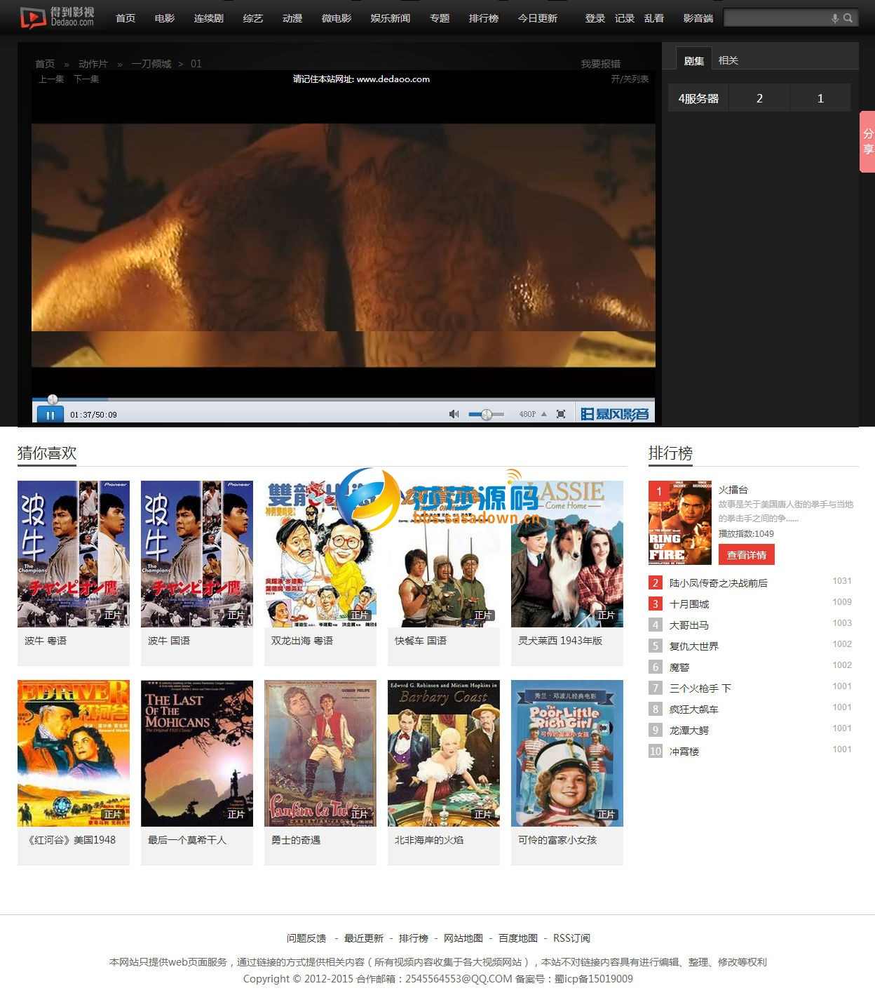
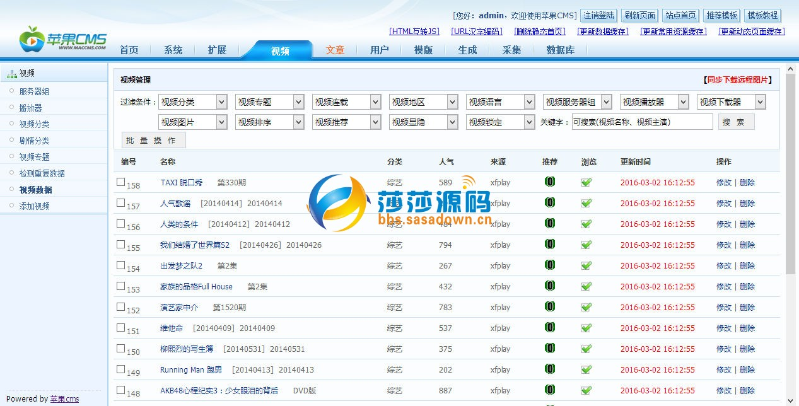

原文出处:本文由博客园博主woainiya提供。
原文连接:https://www.cnblogs.com/woainiya520/p/11403540.html
原文连接:https://www.cnblogs.com/woainiya520/p/11403540.html
源码说明：
非常漂亮大气的一个电影板子，淘宝卖150元的，正版无错，带一键采集，也可以设定自动采集，做电影站的朋友喜欢就拿去吧！
安装说明：
1.直接打开域名自动运行安装
2.登陆苹果cms后台-系统管理-当前使用模板-选择M1938
3.进入后台.---视频管理---视频分类---按下面的模板说明配置---分类模板
--------------------------------------------------------------------
分类ID.分类名称. 英文名 频道模板
1、 电影(dianying) M1938_1.html
2、 电视剧(lianxuju) M1938_2.html
3、 综艺(ze) M1938_3.html
4、 动漫(dm) M1938_4.html
id=19调用微电影分类
-------------------------------------------------------------------
5.首页和幻灯大图推荐内容为4.并在推荐内容上传幻灯大图.
6.点击数据缓存更新，内存数据更新，文件缓存更新。
7.播放器宽度调整890 高度630 最佳。
8.点击站点首页查看效果吧！
亲测截图：
，带一键采集，亲测能用，适合懒人做电影站!0.jpg)


链接：https://pan.baidu.com/s/148vNZZp08oE73M8Mrs4OOQ
提取码：x4n1